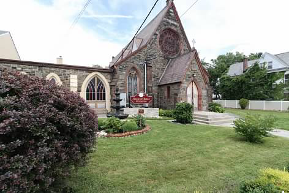

SUNWorship
Sunday Worship Service
Sunday mornings at 10:30 a.m.
View details →
House of Bread Ministries
A church in the heart of the city, with the city in its heart. Join us as we worship Jesus, grow through His Word, and serve our community.

Our church home · Mount Vernon, New YorkWelcome
House of Bread Ministries is dedicated to nurturing both the spirit and the community.
People of all ages and backgrounds are welcome. From the moment you arrive, our church family is ready to help you feel at home.
A welcome from our pastor
At House of Bread Ministries, you will find a caring family committed to worship, prayer, the Word of God, and serving our community. We would be honored to welcome you and walk alongside you in faith.
Stay connected
Worship, grow through the Word, and find community throughout the week.
Explore the full calendar →Sunday mornings at 10:30 a.m.
View details →Wednesday nights at 7:30 p.m.
View details →Friday nights at 7:30 p.m.
View details →HOB Online
Stream services from home or on the go and stay connected to the House of Bread family.